Calcul Vectoriel
I - Angles orientés dans le plan orienté
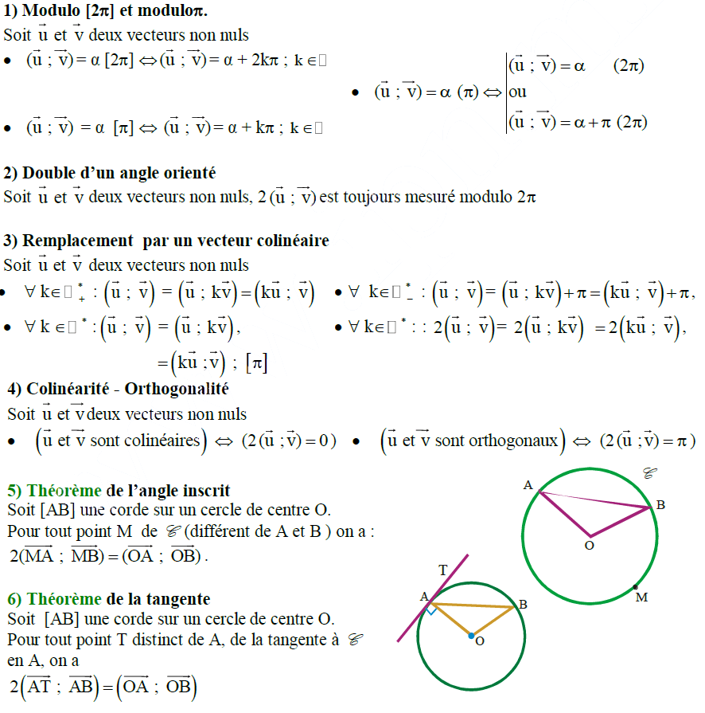
II - Cocyclicité remarquable
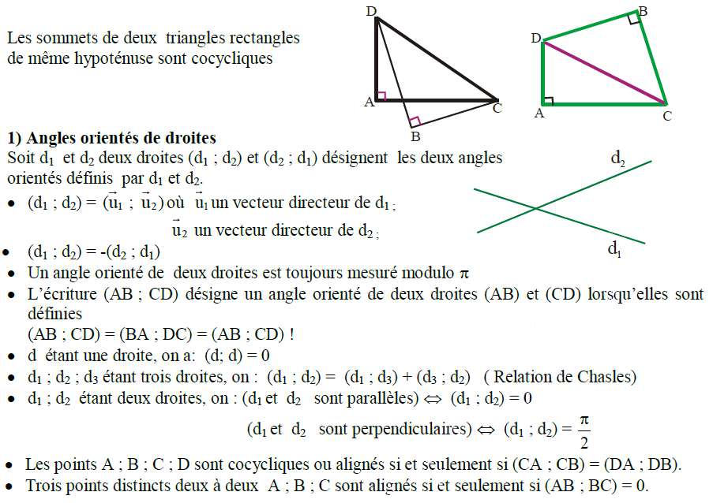
III - Barycentre dans le plan ou dans l’espace
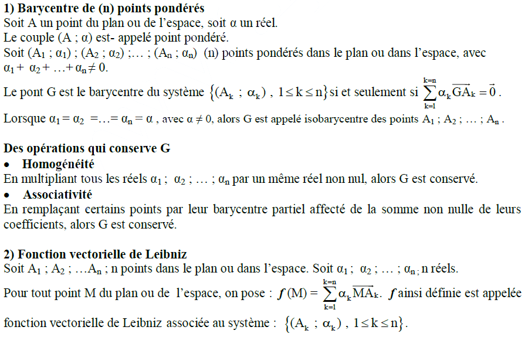
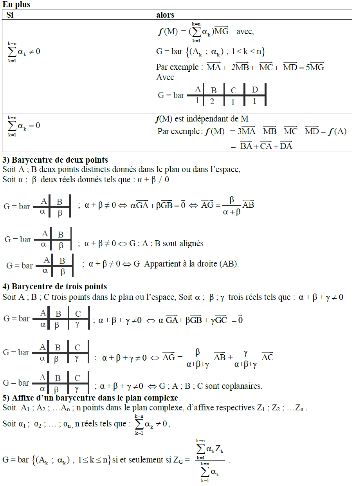
IV - Déterminant dans le plan
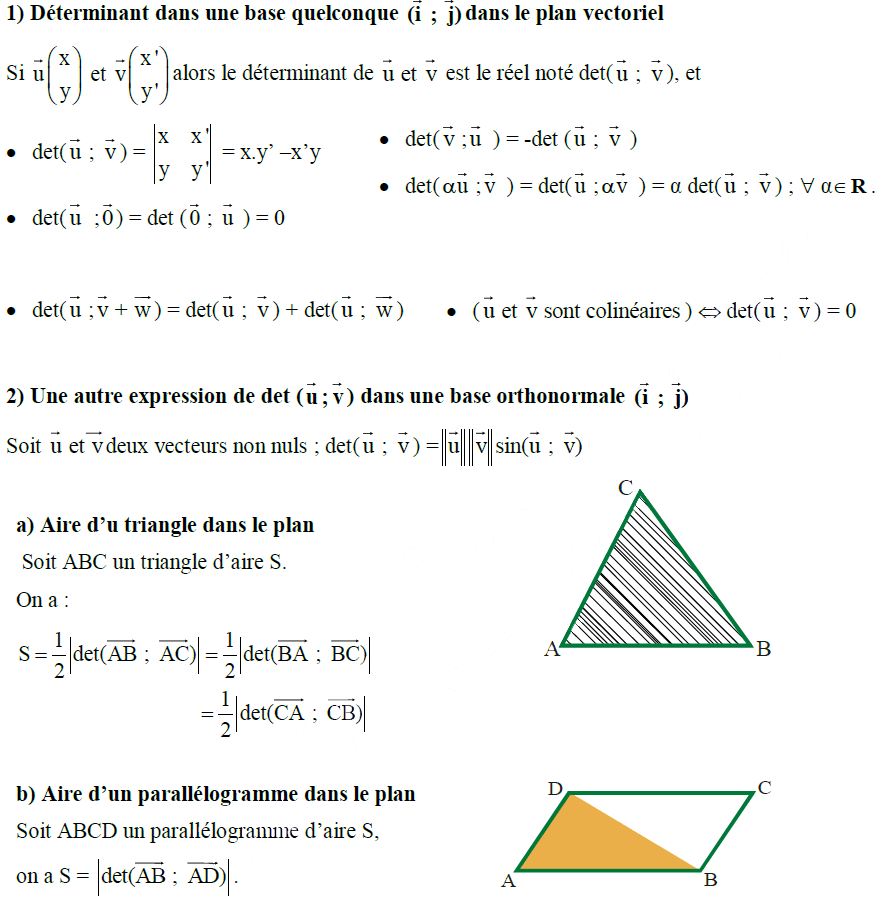
V - Produit scalaire de deux vecteurs dans le plan ou dans l’espace
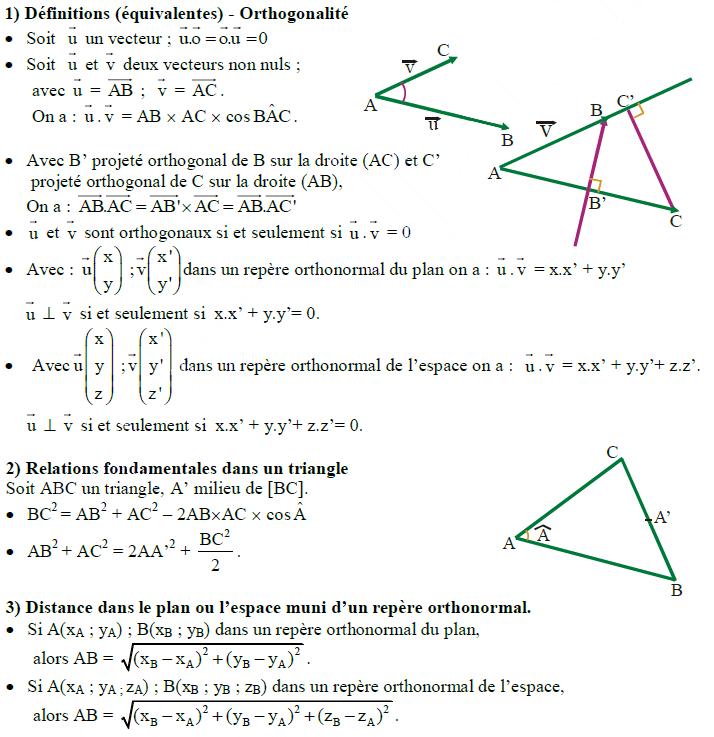
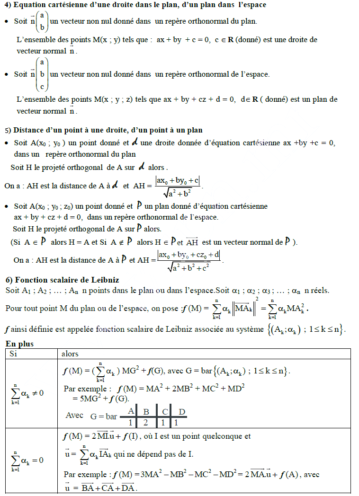
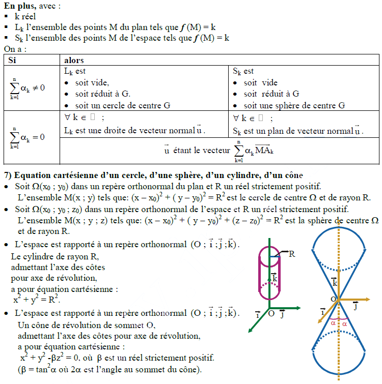
VI - Représentation paramétrique de droites et de plans dans l’espace

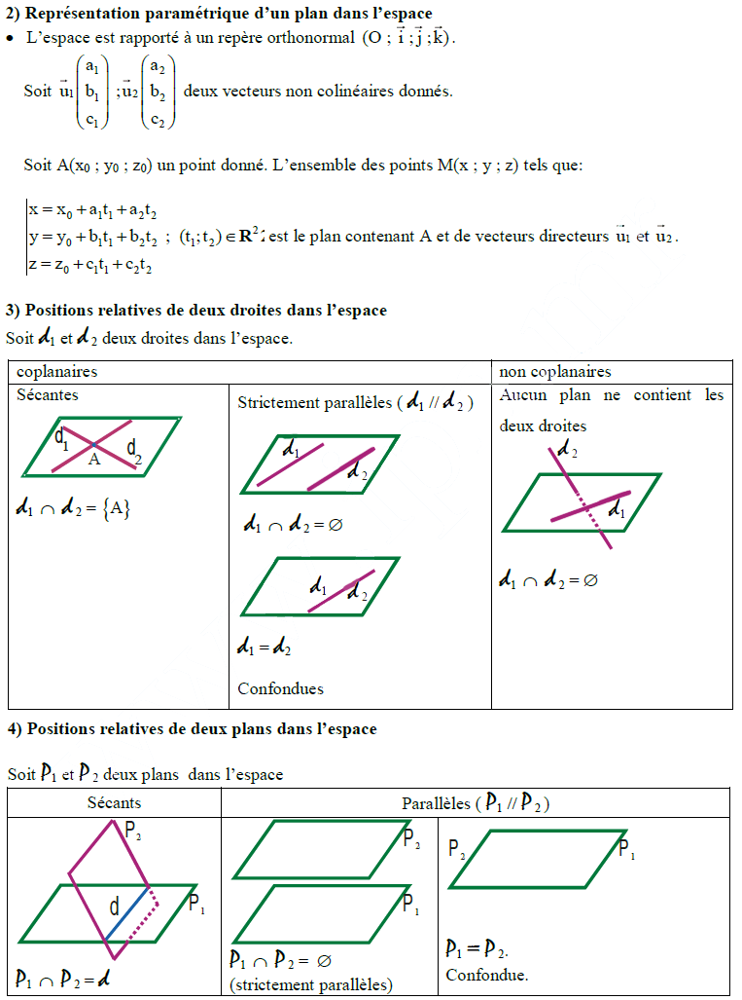
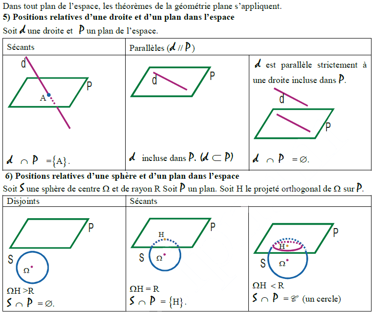
VII - Orientation de l’espace – Produit vectoriel
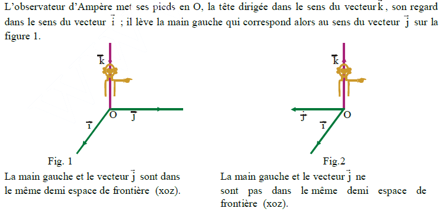
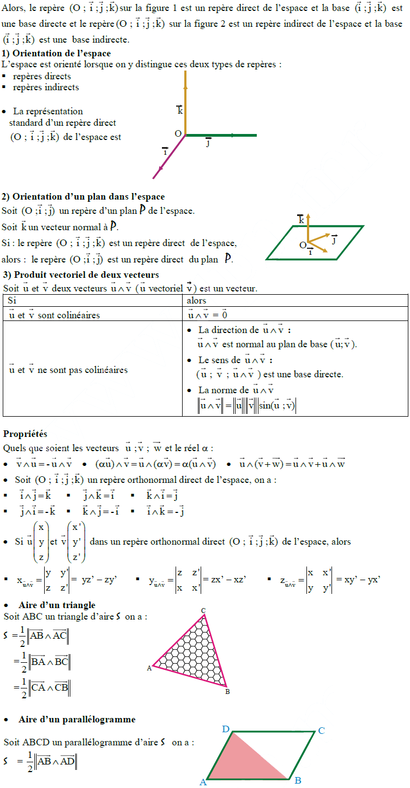
VIII - Projection